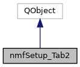

The class containing the interactions for the 2nd Setup tabbed pane. More...
#include <nmfSetupTab02.h>
Inheritance diagram for nmfSetup_Tab2:

Collaboration diagram for nmfSetup_Tab2:

Public Slots | |
| void | callback_Setup_Tab2_AddDatabase () |
| Callback invoked when user clicks the add database button. | |
| void | callback_Setup_Tab2_BrowseProject () |
| Callback invoked when user clicks the browse projects button. | |
| void | callback_Setup_Tab2_DatabaseChanged (QString dbName) |
| Callback invoked when user changes the current database. More... | |
| void | callback_Setup_Tab2_DelDatabase () |
| Callback invoked when user clicks the delete database button. | |
| void | callback_Setup_Tab2_DelProject () |
| Callback invoked when user clicks the delete project button. | |
| void | callback_Setup_Tab2_NewProject () |
| Callback invoked when user clicks the new project button. | |
| void | callback_Setup_Tab2_ProjectAuthorAdd () |
| Callback invoked after user enters the author's name. | |
| void | callback_Setup_Tab2_ProjectDescAdd () |
| Callback invoked after user enters the project description. | |
| void | callback_Setup_Tab2_ProjectDirAdd () |
| Callback invoked after user enters a new project directory. | |
| void | callback_Setup_Tab2_ProjectDirBrowse () |
| Callback invoked when user clicks the browse projects button. | |
| void | callback_Setup_Tab2_ProjectNameAdd () |
| Callback invoked after user enters the project name. | |
| void | callback_Setup_Tab2_RefreshDatabase () |
| Callback invoked when the user wants to refresh the database pulldown list. | |
| void | callback_Setup_Tab2_ReloadProject () |
| Callback invoked when user clicks the reload project button. | |
| void | callback_Setup_Tab2_SaveProject () |
| Callback invoked when user clicks the save project button. | |
| void | callback_progressDlgCancel () |
| Callback invoked when user wants to cancel the progress dialog after all tables have been created. | |
Signals | |
| void | LoadDatabase (QString database) |
| Signal emitted signifying user wishes to load a new database. More... | |
| void | LoadProject () |
| Signal emitted signifying user wishes to load a project. | |
| void | ReloadWidgets () |
| Signal emitted signifying that all the applications widgets should be reloaded. | |
| void | SavedProject () |
| Signal emitted signifying a project has just been saved. | |
Public Member Functions | |
| nmfSetup_Tab2 (QTabWidget *tab, nmfLogger *logger, nmfDatabase *databasePtr, QTextEdit *setupOutputTE) | |
| class constructor for nmfSetup_Tab2 More... | |
| void | clearProject () |
| Clears the line edit widgets in this tabbed pane. | |
| void | createTables (QString database) |
| Creates all of the necessary database tables for the passed database name. If this is called and any tables are already created, those tables won't be affected. More... | |
| void | enableProjectData () |
| Enables all of the project data widget from the project data group box being checked. | |
| void | enableSetupTabs (bool enable) |
| Set the enable state of the subsequent tabs in this tabbed pane group. More... | |
| void | loadWidgets () |
| Loads the current class widgets with initial data. | |
| void | setProjectDatabase (QString dbName) |
| Sets the current item in the pulldown to the passed database name. More... | |
Detailed Description
The class containing the interactions for the 2nd Setup tabbed pane.
Constructor & Destructor Documentation
◆ nmfSetup_Tab2()
| nmfSetup_Tab2::nmfSetup_Tab2 | ( | QTabWidget * | tab, |
| nmfLogger * | logger, | ||
| nmfDatabase * | databasePtr, | ||
| QTextEdit * | setupOutputTE | ||
| ) |
class constructor for nmfSetup_Tab2
- Parameters
-
tab : parent tab widget into which to place this widget as a child tabbed pane logger : pointer to logger class databasePtr : pointer to database class setupOutputTE : unused; kept in for possible future usage
Member Function Documentation
◆ callback_Setup_Tab2_DatabaseChanged
|
slot |
Callback invoked when user changes the current database.
- Parameters
-
dbName : QString name of new database
◆ createTables()
| void nmfSetup_Tab2::createTables | ( | QString | database | ) |
Creates all of the necessary database tables for the passed database name. If this is called and any tables are already created, those tables won't be affected.
- Parameters
-
database : QString name of database whose tables to create
◆ enableSetupTabs()
| void nmfSetup_Tab2::enableSetupTabs | ( | bool | enable | ) |
Set the enable state of the subsequent tabs in this tabbed pane group.
- Parameters
-
bool enable state (true for enabled, false for disabled)
◆ LoadDatabase
|
signal |
Signal emitted signifying user wishes to load a new database.
- Parameters
-
QString of database nameto load
◆ setProjectDatabase()
| void nmfSetup_Tab2::setProjectDatabase | ( | QString | dbName | ) |
Sets the current item in the pulldown to the passed database name.
- Parameters
-
dbName : name of database to set the pulldown to
The documentation for this class was generated from the following files:
- MSCAA_GuiSetup/nmfSetupTab02.h
- MSCAA_GuiSetup/nmfSetupTab02.cpp